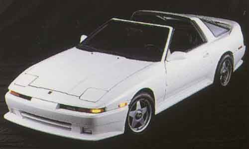

ENGINE
Cylinder Head Gasket, Metal, HKS
86 x 1.0mm
86 x 1.2mm
86 x 2.0mm
86 x 2.5mm
86 x 3.0mm
Piston Set with Rings ( special order )
3100cc. Hi Pressure Cast
Forged 3000cc.
K&N; Filtercharger
Air Filter, K&N; ( direct replacement )
Super Power Flow Air Filter, non turbo only, HKS
Turbo Timer, HKS
Turbo Timer, Trust
Twin Power Ignition
Sequential Blow-off Valve, HKS
Compressor Bypass Valve, HKS
Racing Bypass Valve, HKS
Standard Wastegate, HKS
Special Racing Wastegate, HKS
Adjustable Pop-off Valve, HKS
HKS UPGRADE FOR SUPRA TURBO
Stock HP 230
Stage 1 - Exhaust System, 65mm 251hp (8psi)
Stage 2 - Super Power Flow Air Filter 259hp (8.5psi)
Stage 3 - Electronic Valve Controller (EVC IV) 285hp (11psi)
Stage 4 - Intercooler Upgrade 298hp (11.5psi)
Stage 5 - Programmed Fuel Computer (F-con) 330hp (13.5psi)
Stage 6 - Vein Pressure Converter (VPC) 345hp (13.5psi)
Stage 7 - Prom & Injector Upgrade
Sport Turbo Upgrade 438hp (15psi)
TRUST / GREDDY UPGRADE FOR SUPRA TURBO
Exhaust System, Stainless Steel
PRofec Electronic Boost Controller
PRofec B Electronic Boost Controller
Airinx Air Filter
Rebic III Fuel Management System
Rebic III Simulator
Rebic LC
Blow-off Valve Kit
Turbo Upgrade, TD-06
Turbo Upgrade, TD-07
Intercooler
* Please call for a complete listing of HKS and Trust Parts.
COMPUTER CHIP
Techtom Computer Reprogramming
GAUGES
Boost Meter, 60mm, Trust
Boost Meter, 60mm, HKS
Exhaust Gas Temperature, 60mm Trust
Exhaust Gas Temperature, 60mm HKS
DRIVETRAIN
Centerforce I
Centerforce II
Centerforce Dual Friction
HKS Heavy Duty Sport Clutch
SUSPENSION
Tokico High Performance Gas Shocks
Tokico Illumina II ( w/ TEMS )
HKS 3-way Adjustable Shocks ( w/ TEMS )
HKS TEMS Controller
Tokico Sport Springs 1.0" drop
Eibach Progressive Springs 1.0" drop
Suspension Techniques Springs 1.0" drop
Intrax Springs 1.75" drop
Trust Springs 1.0" drop
Suspension Techniques Sway Bar Set
Strut Tower Bar, Trust
Strut Tower Bar, GAB
Strut Tower Bar, Cusco, type OS
Trust Suspension Kit
HKS Suspension Kit
Cusco Camber Plates, Front
BODY
Kaminari Kit
EXHAUST SYSTEM
HKS, 65mm T, 60mm NA
Trust
Remus
BRAKE COMPONENTS
Repco Metal Master, set
Carbon Kevlar Racing Brake Pads, set
Stainless Steel Braided Brake Lines, set
Cross Drilled Rotors, pair
Brembo Upgrade
For any inquiries, please call 213-755-1177 or email us.